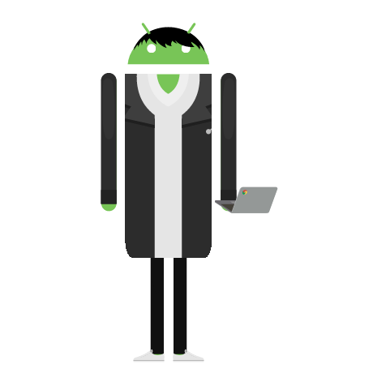

スクリーンショット
dotted_line
Flutterで点線を描くウィジェットです。2019年に公開して、いまも使われ続けています。方向・太さ・グラデーション・角丸に対応しました。再描画の多い画面向けに、最適化オプションも持たせています。
- pub.devのいいね
- 326
- GitHubのスター
- 48
pub.devはFlutterのパッケージ配布サイトです。
その間をつなぐ仕事のご相談を受けています。
梅津 光
モバイルアプリエンジニア。資産運用サービスのウェルスナビ株式会社で、Androidアプリを作っています。
2016年からアプリの開発に携わっています。うち6年はプロダクトマネージャー（PdM）として、作るものを決める側にいました。


技術的な正しさだけでは、プロダクトの決定は動きません。意見が通らないのは、間違っているからではありません。ステークホルダーに説明できるロジックがないからです。そのロジックをエンジニアの側から設計する方法をお伝えします。
プロダクトマネージャーを任されたばかりの方の立ち上がりを支援します。会議体の設計や、目的を言語化することといった土台から一緒に組み立てます。
要件の受け渡し方や、意見の出し方を仕組みにします。片方だけでは決められない部分を、両側から詰めます。
形式は勉強会、ワークショップ、個別の相談など、ご要望に合わせます。
エンジニアとして働きながら、個人開発を続けていました。そこで、作る技術だけでは使ってもらえるサービスにならないと気づきました。何を作るか、なぜ作るかを考える力を伸ばしたくて、2019年にプロダクトマネージャーへ移りました。
何を作るか、なぜ作るかを考える力は、たしかに大切でした。ただ、自分にはもっと足りないものがありました。業界が変わっても職種が変わっても必要になる土台です。具体的には次の3つでした。
ここでつまずいた経験が、いま受けているご相談の元です。
土台が身につき、実践できるようになってきた頃です。久しぶりに個人開発をして、作ることの楽しさを思い出しました。新卒の研修で、思い描いたものが動くものとして形になる感覚がとても楽しかったです。それが原体験になっていました。
2025年10月にエンジニアへ戻りました。理由は2つあります。
加えて、AIを活用したものづくりに乗り遅れたくないという思いもありました。
資産運用サービスの機能開発を行うチームにいます。実装に携わりながら、チームと開発プロセスを整えています。
事業側から要件を受け取ったら、システム観点の要望や制約を返します。あわせて、開発を担う立場だから気づける顧客視点のフィードバックも返します。
条件の組み合わせや顧客の状態を網羅的に整理し、それぞれの場合に何が起きるかを洗い出します。そのうえで、顧客に受け入れられる体験になっているかを事業側と話しながら形にしています。
モバイルチームの目標設定と、タスク管理の仕組み作りも担当しています。
新規事業のプロダクトマネージャーとして、開発と事業の橋渡しを担当しました。セキュリティ対応のプロジェクトでは、安全性と利便性を両立した顧客体験を設計しました。
担当した主な案件です。いずれも期日が動かせないものでした。
鉄道事業者向けの公式アプリと、自社のバスナビゲーションアプリを担当しました。要件定義から実装・テスト・障害対応まで、AndroidとFlutterの両方で関わりました。
Androidは2016年から、Flutterは2019年から実務で使っています。
Flutterで点線を描くウィジェットです。2019年に公開して、いまも使われ続けています。方向・太さ・グラデーション・角丸に対応しました。再描画の多い画面向けに、最適化オプションも持たせています。
pub.devはFlutterのパッケージ配布サイトです。
AIが毎日データを分析して、競艇の予想を出すサイトです。実績を盛った予想サイトが多いなかで、的中実績を全公開することを軸にしました。予想の作られ方も公開し、出す数字は機械集計値だけに絞っています。
コーディングエージェントを複数並行で動かすと、入力待ちで止まったものに気づけません。それを知らせて、ワンクリックで該当の画面へ飛べるようにしたツールです。配布と更新の仕組みまで作って運用しています。
勤怠の過不足を先読みして、毎日少しずつ調整できるようにするWebアプリです。足りない分を残業しようにも、働ける時間には限度があります。残業した分をまとめて早上がりするのも簡単ではありません。毎日少しずつなら調整できる、という考え方で作りました。
エンジニア組織やプロダクトマネジメントの支援について、どのような状況かを伺うところから始めます。相談内容が固まっていなくても構いません。